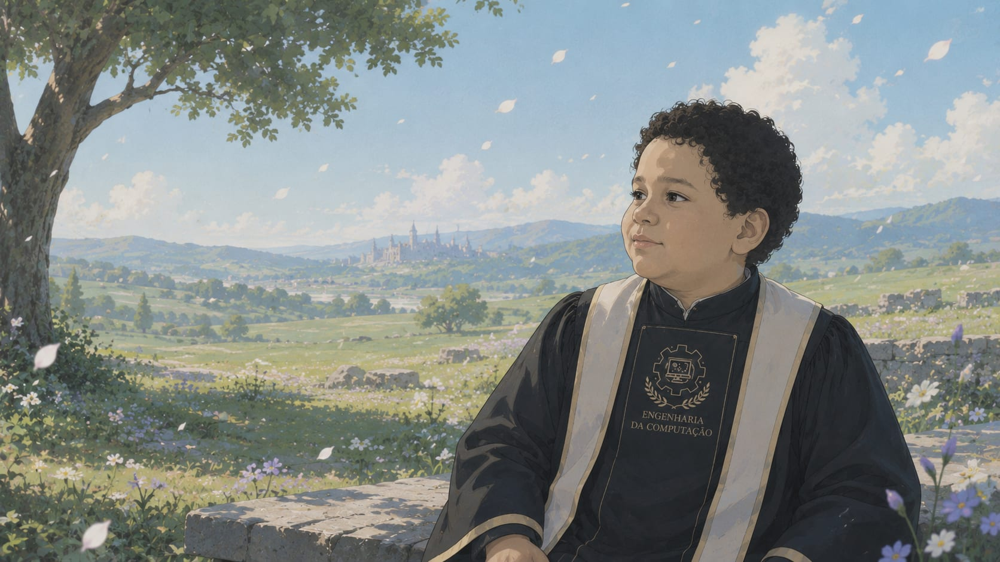
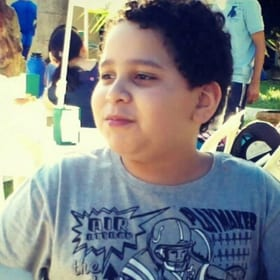

Convite de Formatura
O fim de uma jornada.
O início de muitas outras.
11 · 08 · 2026
✦
Toda jornada chega ao seu destino.
Algumas terminam com despedidas. Outras, com reencontros. E existem aquelas que nos transformam tanto que, quando finalmente chegam ao fim, percebemos que elas eram apenas o primeiro capítulo da nossa história.
Depois de anos de aprendizado, desafios, noites em claro, conquistas e pessoas que tornaram o caminho inesquecível, chegou o momento de celebrar o encerramento dessa etapa e dar o primeiro passo rumo ao que ainda está por vir.
Será uma enorme alegria compartilhar esse momento com você.
Formando
Matheus Serrão Uchôa
Engenharia da Computação — UFAM
Data
11 de agosto de 2026
terça-feira
Horário
19h
chegue com ~30 min de antecedência
Local
Auditório Eulálio Chaves
Universidade Federal do Amazonas
Confirmação de presença
Para que tudo seja organizado com carinho, confirme sua presença até 4 de agosto de 2026.
✦ ✦ ✦
“Toda jornada chega ao fim. Mas, às vezes, é justamente no fim que descobrimos onde a próxima começa.”
Espero celebrar esse novo começo ao seu lado.
Matheus

a foto foi escolhida pela minha mãe 🫠